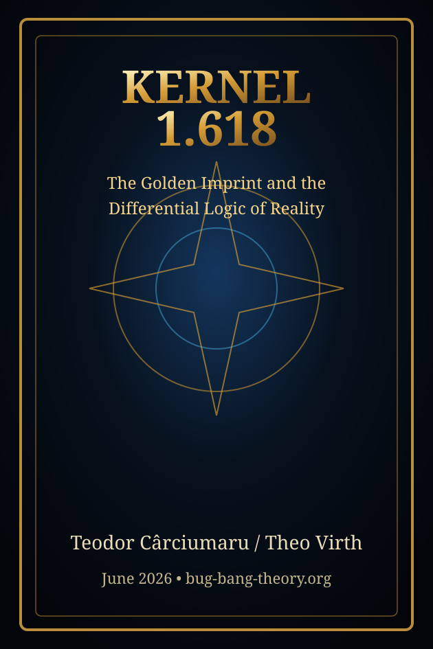
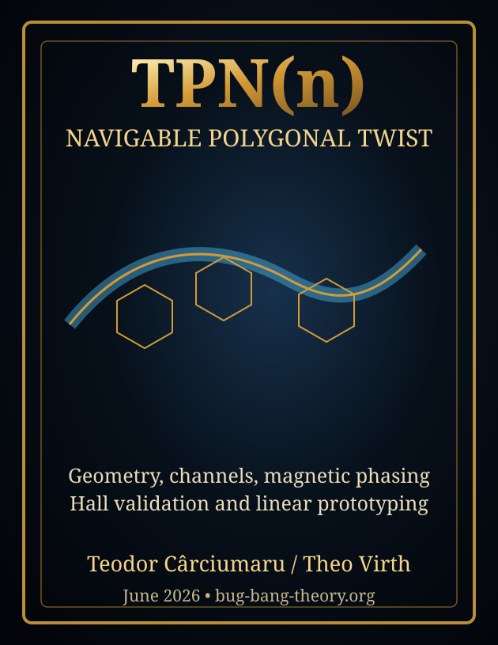
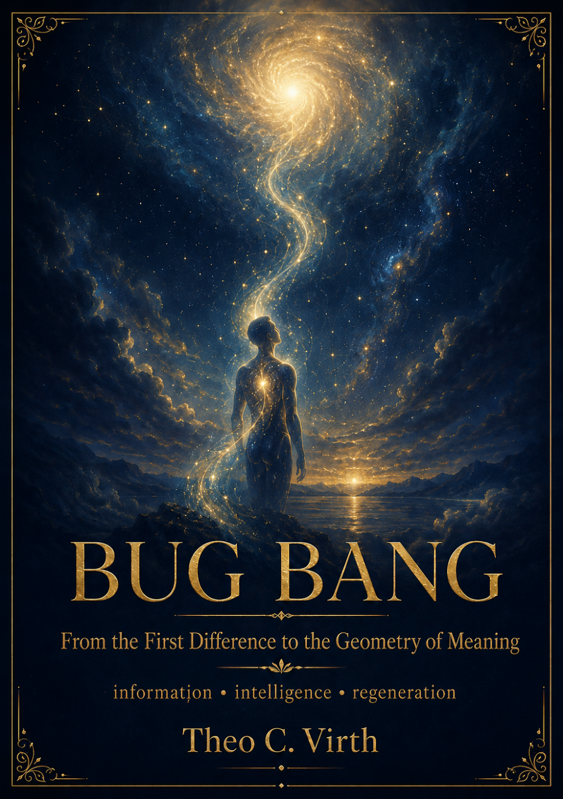
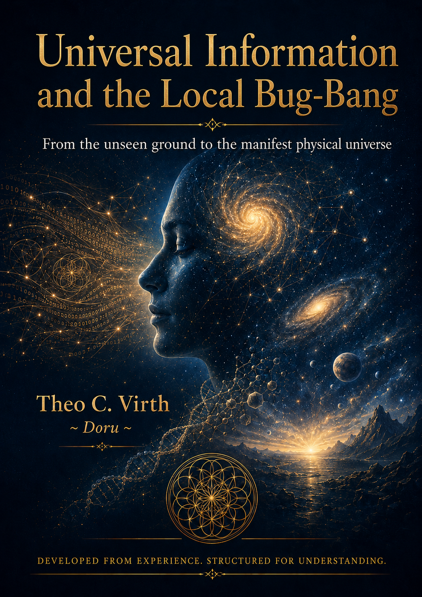
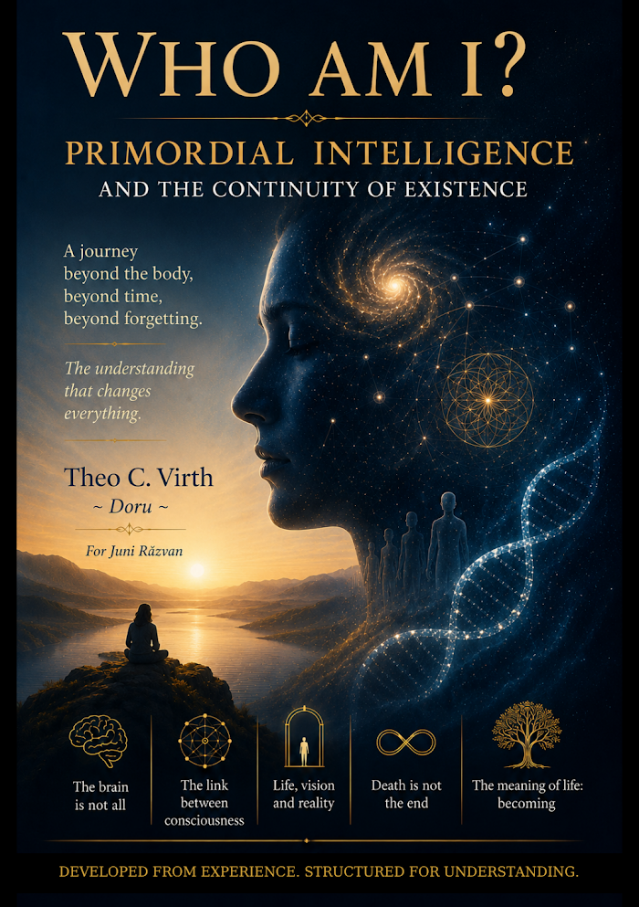
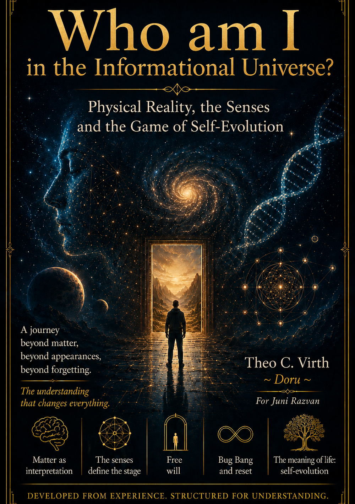
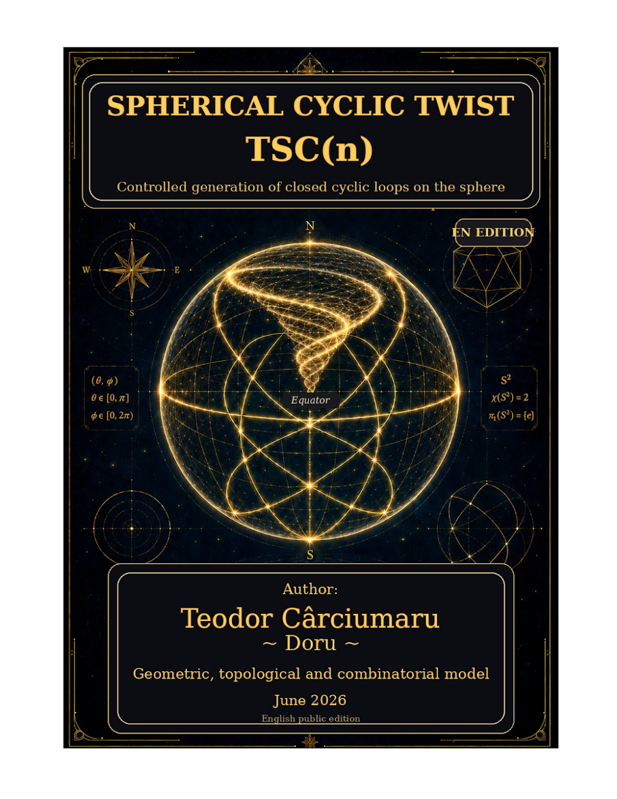
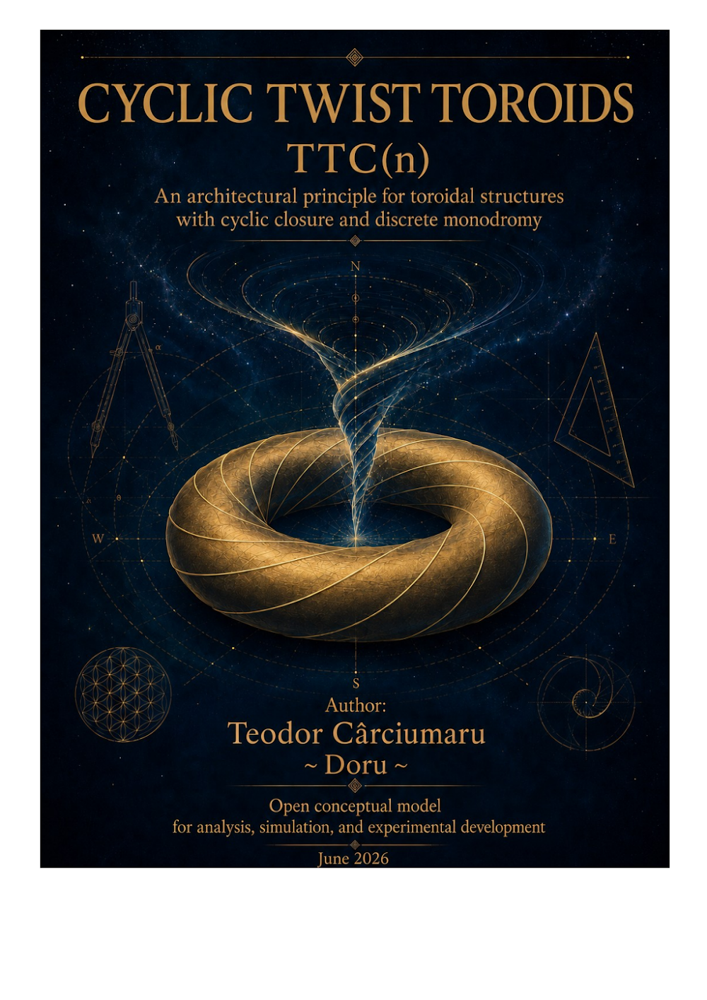

English PDF library
English Library
Public English materials available on Bug-Bang-Theory.org, separated from the Romanian editions.
Updated: BUG BANG Theory EN is available again as the rebuilt public edition.


Model · EN
3SOS-C
Differential ternary model with a neutral equilibrium state: 0 is treated as active balance, not absence.

Book · EN · rebuilt
BUG BANG Theory
From the First Difference to Information, Intelligence, and Regeneration.




